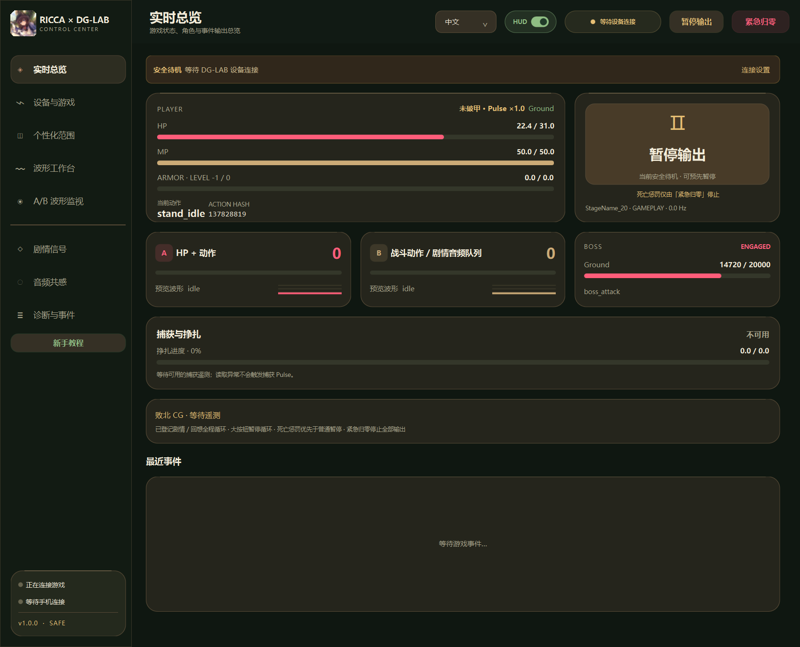
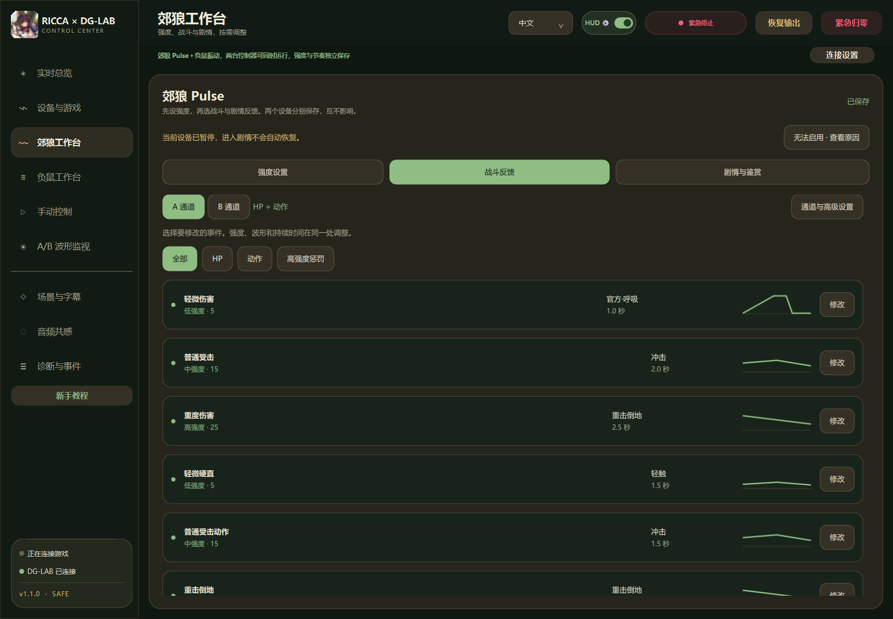
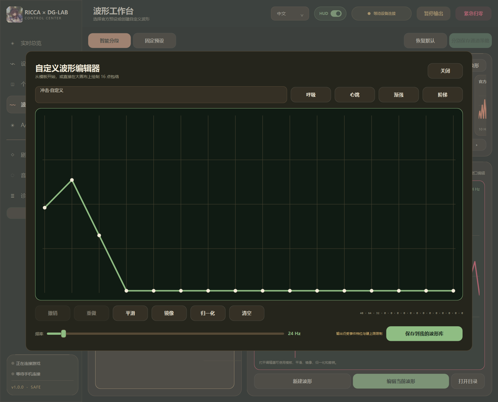
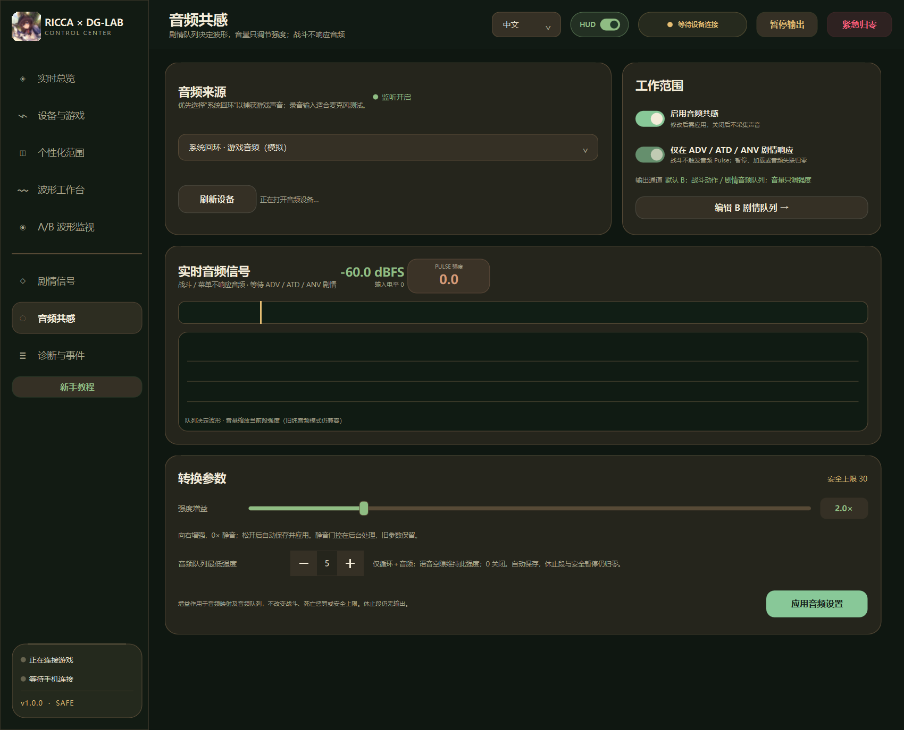
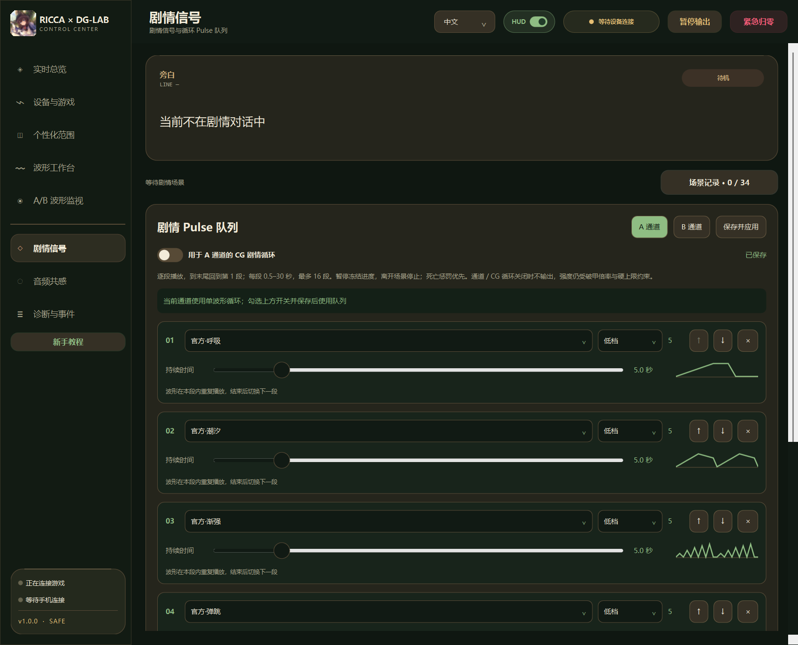
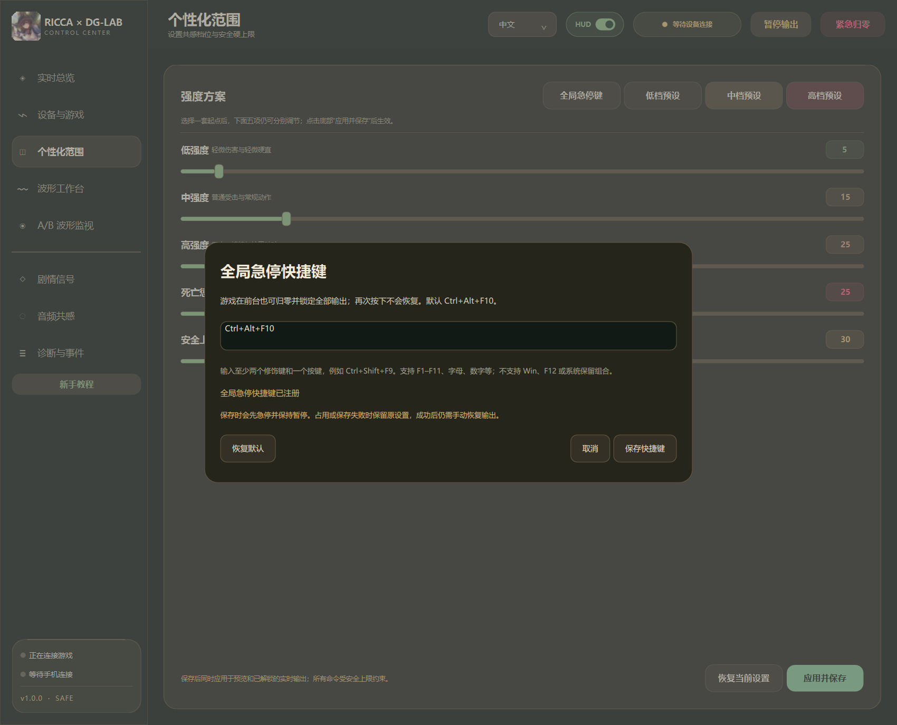

Ricca 1.4.1 · 中／英文相同指纹构建
Windows · DG-LAB 3.0 · Holy Knight Ricca
Ricca × DG-LAB
控制中心
连接 Ricca 与郊狼设备，把 HP 伤害、受击动作与捕获状态同步到 A/B 通道。独立 Windows 软件，无需 BepInEx、不注入 DLL、不写入游戏内存，不包含游戏本体。
核心功能
格挡不触发惩罚；普通事件重叠取较强反馈，死亡惩罚优先于普通暂停；破甲后本次生命固定 ×1.2，不叠加。实际输出始终受用户设定的硬上限约束。
选择下载通道
选择适合的下载通道：百度网盘、COS 直链或 GitHub。
1.0.1 · 已正式发布
172 项自动测试与打包启动检查通过。下载并完整解压 ZIP 即可运行，无需安装 Python，升级保留配置。软件未签名，Windows 可能提示；软件上限不保证物理安全。
百度网盘大陆通道
百度网盘分享，链接已包含提取码，也可在下方复制。
提取码
尚未发布848y高速直链备用
通过腾讯云 COS 直接下载 Windows ZIP，无需网盘客户端。
尚未发布GitHub Release备用
版本记录与发布文件。Ricca 使用独立软件包，不复用 Manaka 下载链接。
尚未发布发布版本 1.0.1SHA-256
安装包校验值随发布文件提供程序界面
软件实际页面，使用模拟遥测；点击图片可放大。












支持与交流
关注开发动态、实机验证进度与版本发布。
测试前请手动设置硬上限并核对 A/B 低强度输出，死亡惩罚不受普通暂停拦截，停止全部输出请用「紧急归零」。软件上限不等于人体安全保证。
查看首次测试清单 →特别感谢
感谢 DG-LAB 开源项目，以及协助核对游戏状态与设备反馈的测试者。游戏原画与商标归各自权利人所有。